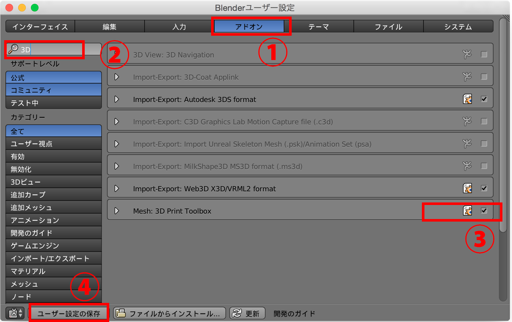
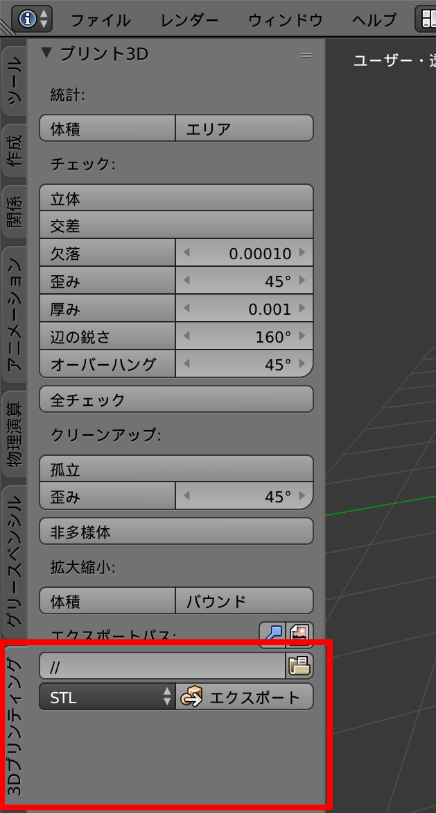
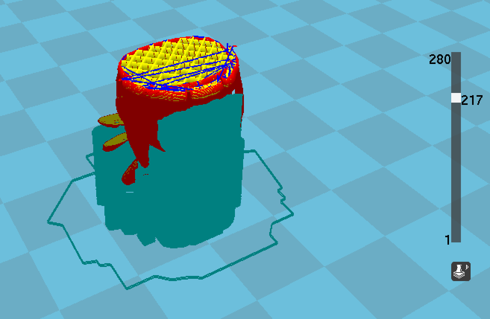
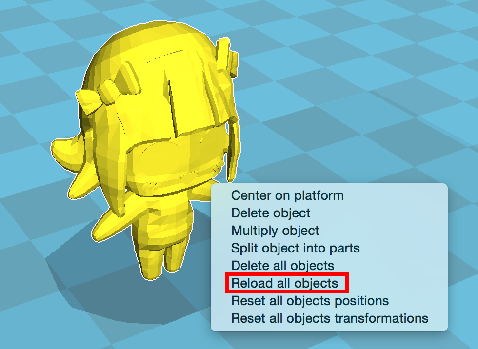

Blender Advent Calender 2015 12月11日の記事です。
Blenderには3Dプリント用のアドオンが標準で付いています。まずは有効化しましょう。（この記事を書いてる時点の私が使っているバージョンは2.76bですが、もうちょい前のバージョンから付いていました。）【ファイル】→【ユーザー設定】の①アドオンタブを選択→②検索窓に3Dと入力→③フィルタされたアドオンの中に3D Print Toolboxというのが検索に引っかかるので、チェックを入れて有効にします。使い続けるなら④ユーザー設定の保存を忘れずに。
上記の手順で無事にチェックが付いたら、オブジェクトモード時に3Dプリンティングというタブが左側のパネルに追加されます。その横にエクスポートというボタンがいかにも押してほしそうにしてますね。早速押してエクスポート・・・といきたい所ですが、.blendファイルを保存していないと人間に厳しいエラーメッセージを吐いてくれます。まずはファイルを保存しましょう。保存後、エクスポートボタンを押すと【ファイル名】―【オブジェクト名】.stlというネーミングルールでstlファイルがワンクリックで強制的に上書き保存されます。
あとは通常通りCuraでstlファイルを読み込み、スライスしてチェックします。
文字やトゲトゲの部分がうまくスライス出来てなかったり、サポート材の付き方がいまいちだったり、まぁ一発ではうまくいきませんよね・・・。ここからが3D Print Toolboxの本領発揮です。手順は下記になります。
1. モデルを修正
2. 3D Print Toolboxのエクスポートを押す
3. Curaでモデルを右クリックし、Reload all objectsを選択

4. おしまい!! Cura上に修正されたオブジェクトが出現します
これがもし3D Print Toolbox無しだと・・・
1. モデルを修正
2. メニューからファイルを選択
3. エクスポートにカーソルを合わせる
4. 出てくるエクスポートの種類からstlを選択
5. ファイルの保存画面でSTLをエクスポートボタンを押す
6. Curaでモデルを右クリックし、Reload all objectsを選択
7. Cura上に修正されたオブジェクトが出現
となります。節約出来るのは3クリックなのですが、終盤の細かい詰めの作業をしている時、これが意外と効いてきます。やってみると分かりますが、カーソルの移動量も結構違います。
私はCuraとSimplify3Dしか使った事がないのですが、らくちんリロードは他のスライサでもできるかもしれません^^;ちなみにSimplify3Dではオブジェクトのリロードはまだ出来ない模様です。（Feature Requestに挙がっていました）
3D Print Toolboxは他にも色々便利なチェック機能があります。今回は割愛しますが、使いこなせばそこそこ力になってくれるでしょう。CuraのGUI周りもPythonなので、自分でもっと楽ちんな連携機能を組み込むのもありかも？？
この記事は随時バージョンアップしていくつもりですが、なんか変なとこがあったらPullリク投げてもらえればと。ではでは快適な連携で楽しい3Dprintingライフを！
さてBlender Advent Calenderもそろそろ折り返し。明日12/12（12揃いだ！）のBlender Advent Calenderは、@kozmofさんです！
#あとがき# 前々から使ってみたかったGithub Pagesで書いてみました。Bootstrapの良さげなテーマも探してみたのですけど、こういう記事向きなのはあまり見つからず・・・。（一個だけ見つけたけど、SphinxからExportして使う感じだった。）忙しい時期と重なっちゃって結局HTML直書き。ちょっと読み辛くてごみんね。